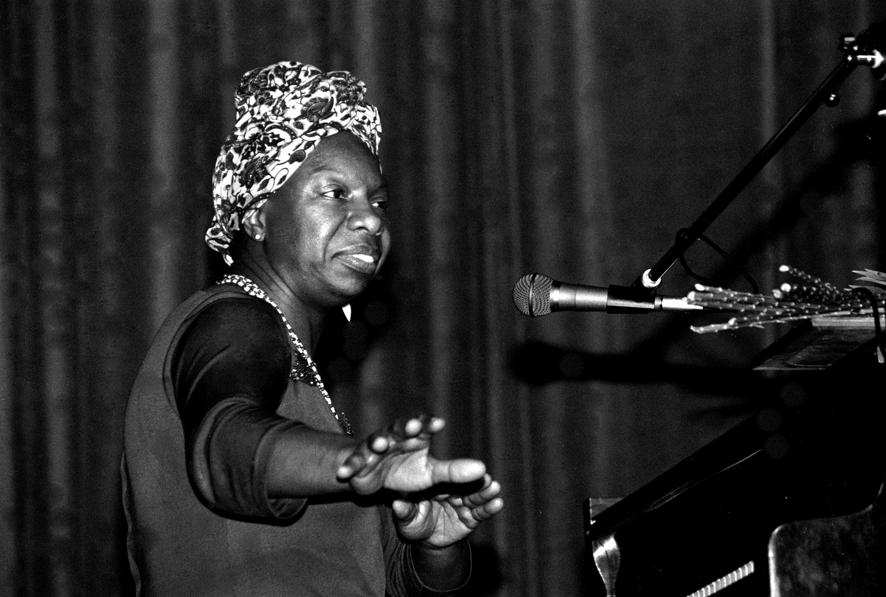

Nina Simone
A deusa do soul

Eunice Kathleen Waymon, conhecida artisticamente como Nina Simone foi uma pianista, cantora, compositora e ativista pelos direitos civis dos negros norte-americanos. É bastante conhecida nos meios musicais do jazz, mas trabalhou com diversos estilos musicais na vida, como música clássica, blues, folk, R&B, gospel e pop.
“Liberdade para mim é isto: não ter medo.”
Sua história
Depois de fracassar na tentativa de ser uma grande concertista através do conservatório, Nina permaneceu algum tempo em Nova York até ir para Atlantic City e, nessa cidade, trabalhando como pianista em um bar, cedia aos pedidos do dono para cantar enquanto tocava piano. Adotou o nome Nina Simone, que deu início a uma carreira bem-sucedida, com hits como Feeling Good, Don't Let Me Be Misunderstood, Ain't Got No - I Got Life, I Wish I Knew How It Would Feel To Be Free e Here Comes The Sun, além de My Baby Just Cares For Me, que foi usado em uma propaganda televisiva para o perfume Chanel Nº 5 em 1986, que ocasionou em um relançamento da gravação e na volta de Simone às paradas musicais.
Em sua carreira, interpretou canções de diversos estilos, indo do gospel ao soul, e também compôs algumas canções. Foi uma das primeiras artistas negras a ingressar na renomada Escola de Música de Juilliard, em Nova Iorque. Sua canção Mississippi Goddamn tornou-se um hino ativista da causa negra. Fala sobre o assassinato de quatro crianças negras em uma igreja de Birmingham em 1963.
Ao se apresentar em um evento militar em Forte Dix, Nova Jersey, em 1971, em plena Guerra do Vietnã, Nina Simone deu voz àqueles que eram contrários ao conflito, quando cantou um poema em que Deus é chamado de assassino, após 18 minutos de My Sweet Lord, de George Harrison. Nina esteve duas vezes no Brasil, onde gravou "Pronta pra cantar (Ready to sing)" com Maria Bethânia em 1990. Seu último show ocorreu em 1997 no Metropolitan. A artista faleceu em sua residência, enquanto dormia, na cidade francesa de Carry-le-Rouet, em 2003, após lutar por muitos anos contra o câncer de mama.